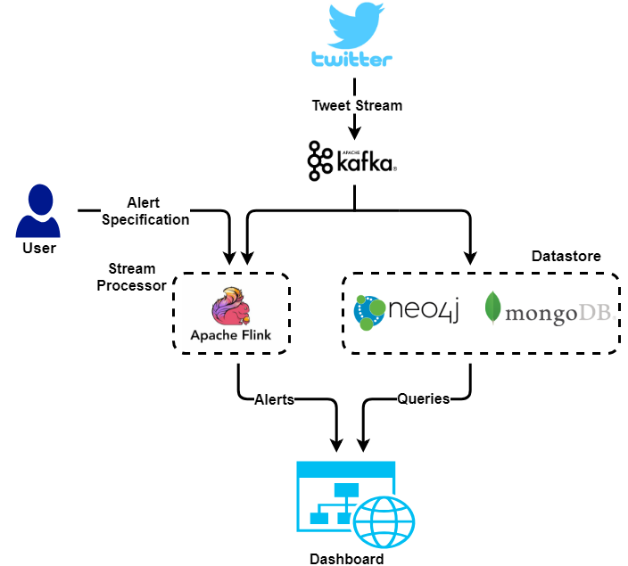

Introduction to twitter analytics system¶
Nowadays social media generates huge amount of data which can be used to infer a number of trending social events and to understand the connections between different entities. One such useful platform is Twitter where users can follow other users and tweet on any topic, tagging it with hashtags, mentioning other users or using URLs. This data can be spatially represented as a network of entities (like users, tweets, hashtags and URLs) which are interconnected in complex ways. A number of programming tools are often used by developers to perform various tasks on a subset of this data.
However, in reality, this data is not static with time, giving it a temporal dimension as well. The system thus needs to capture both the spatially and temporally evolving aspects of this network in its database schema. The same abstraction also needs to be extended to the query specification process, making it easier to specify queries without writing queries in complex database specific languages. Hence, instead of limiting the users to a limited set of APIs, this system would allow any complex query to be specified.
Our system continuously streams tweets from the Twitter Streaming API, persists them into a database schema compliant with the above needs and gives users a couple of abstractions to work with. The first abstraction is over the live stream of tweets allowing them to detect custom live events (Eg. finding hashtags going viral) in the stream and get notified about them. The second abstraction is over the historical view over the data stored from the stream. The second abstraction looks at the data as a network of users, tweets and their attributes, along with the network’s temporal dimension, allowing users to specify complex queries in an abstract way.
Together, these two abstractions would provide an intuitive analytics platform for the users.
Major parts of the system¶
Lets begin by describing the major components of the system.
- The streaming tweet collector: We have a connection to the twitter streaming API which keeps on collecting tweets from the twitter pipe. For more details refer to the section on twitter stream.
- The alert generation system: The collected tweets are pushed to Apache Kafka for downstream processes. This tweet stream is processed by Apache Flink, which is an open-source, distributed and high-performance stream processing framework, to look for user specified alerts in the tweet stream.
- The datastores: The stream is also persisted in a couple of data stores to make queries later. Neo4j, which is a graph database management system supported by the query language Cypher, is used to store network based information from these tweets. MongoDB, which is a document oriented database, is used to store document based information to answer simpler aggregate queries.
- The dashboard: These alerts and queries are then accessible to the user from a web application based dashboard. Please refer to the section Dashboard Website in which we explain the functionalities of the system through use cases.